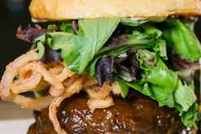
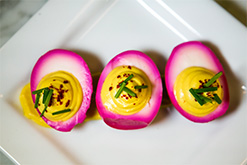
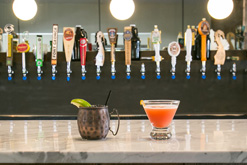
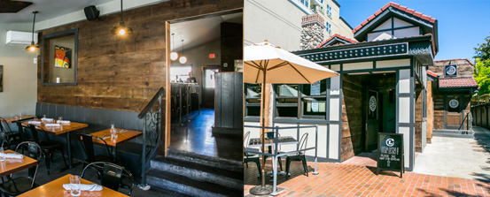

| LIBATIONS | |
|---|---|
| Blood Orange Mimosa Blood orange coulee, sparkling wine, orange juice, fresh thyme |
6 |
| Sweet Ghost Pepper Bloody Mary Sweet Ghost Pepper vodka, house bloody mix, assorted garnishes |
9 |
| Fresh Brewed Stumptown Coffee | 2.5 |
| Orange Juice | 3 |
| Bellini | 7 |
| STARTERS | |
| 4 | |
| Buttermilk Biscuts With whipped butter and jam |
3.5 |
| SALADS | |
Rogue bleu cheese, hazelnuts, tender greens, cider vinaigrette |
9 |
Farmer veggies, champagne vinaigrette |
7 |
| —Add chicken | +7 |
| Pork Belly Apple Salad Pork belly confit, granny smith apple, candied hazelnut, redonion, cider vinaigrette, spinach |
12 |
| MAINS | |
| All burgers served with fries. Sub vegetarian Palouse lentil patty on any burger for $1 |
|
| Farmers Breakfast Eggs, choice of meat, homefries, biscut |
13 |
| Biscuts and Gravy Buttermilk biscuts under our house made sausage gravy |
9 |
| Brioche French Toast With seasonal fruit compote |
9 |
| Ham Benedict Poached eggs, Carlton Farm ham slices, hollandaise onhouse English muffin with breakfast potatoes |
12 |
| Southern Benedict Poached eggs, ham steak, smashed breakfast potatoes, caramelized onion, house made English muffins smothered in hollandaise sauce |
16.5 |
| Draper Valley Chicken and Waffle Sandwich Fried chicken breast sat between two buttermilk waffles, drizzled with maple syrup |
11 |
| Waffles Duet One savory, one sweet, seasonal fruit compote, housewhip, sautéed lardons, caramelized onion, hazelnuts |
11 |
| Vegetarian Open-Faced Omelette Local choice ingredients served open with breakfast potatoes and buttermilk biscut (Ask your server for today's offering) |
MP |
| Steak and Eggs Chef's cut steak cooked your way, two eggs any style, breakfast potatoes and buttermilk biscut |
17 |
| Breakfast Burger Grass fed beef, Tillamook cheddar and an egg sunny up on a house made English muffin |
11 |
| Butcher's Grind House Burger Lettuce, onion, house-made red pepper relish, garlic aioli |
11 |
| —Add cheese or bacon | 1 |
| The Hillbilly House-made BBQ, fried red onion, baby greens |
13 |
| Palouse Lentil Burger Seasoned lentil and mushroom patty, bibb lettuce, picked red onion, garlic beet spread |
12 |
| SIDES | |
| Breakfast Potatoes | 4 |
| Sausage Patty | 4 |
| Two Eggs Any Style | 3 |
| 3 | |
| 4 | |
| House Made Onion Rings | 4 |
| Mac 'n' Cheese with Bacon | 8 |
Welcome Friends,
If you've discovered this page in search of great burgers, know you're in good company. This is a place for bacon-laced patties, hunks of bleu cheese, and get-your-hands-juicy burgers. So juicy your hands will be a hot mess, but who the heck cares 'cause it's a burger and that's how it should be. Don't be ashamed friend, you're just doing it right.
Now, if you're here searching for vegetarian options, you'll find we have those, too. Some of our best friends are herbivores, so we get it: vegetarians like good burgers too.
We all want to feel good about what we eat, but we want you to feel great about what you're eating. That's why at Local Burger we are committed to providing quality food and beverages from local farmers that care about their product. We've got terrific burgers, sandwiches, salads and sides all made with love, in-house, from locally-sourced ingredients.
And don't think we've forgotten about you, dear beer lover! In addition to our tasty wine and cocktails, we have 24 tap handles and are all about pouring you that perfect cold one.
Good burgers, beer, and cocktails, locally sourced from people who care. If you love those things too, then come by and make some burger buddies.
—Local Burger
Local Burger is located at 10134 Main Street in Downtown Bellevue
For Reservations, click here.
All other inquiries, please call us at (425) 454-8559 or email us at info@localburger.org.
Thank you for your business!
So, you've found the good stuff! Save yourself some indecision, we've got all the menus you need right here...
Local Burger is open from 11am to close on the daily.
Looking to get happy? Be here from 3pm to 6pm.
Brunch is on the weekends from 9am to 3pm.
Problems with uncertainty? Make a reservation here!
We believe in real food, grown and harvested by the good folks in our community who take care of their land for future generations. We believe in whole, natural flavor. We believe in sustainability, not as an abstract concept, but as a conscious daily choice. We believe in hands, products made by hand, and the goodwill fostered by such hand-in-hand relationships.
Thank you for your business.
Daytime Menu Happy Hour Brunch Catering   
Delivered Lunches
Please order 24 hours in advance
| SANDWICHES & WRAPS | |
|---|---|
| All include Tim's Cascade potato chips and a fresh chocolate chip cookie | |
| Roast Turkey Blue Valley turkey, Tillamook cheddar, red onion jam, aioli, leaf lettuce on a fresh baguette |
10 |
| Italian Sub Smoked ham, salami, provolone, leaf lettuce, red pepper relish, olive oil on a hoagie roll |
10 |
| Chicken Salad Sandwich (or Wrap) Local Burger chicken salad, sliced granny smith apples, seasonal greens, tart cherries on a fresh baguette or wrap |
10 |
| Braised Lamb Wrap Locally raised lamb, feta cheese, red onion, leaf lettuce, house made tzatziki, olive oil in a spinach wrap |
10 |
| Local Burger BBQ Chicken Wrap Local Burger roasted chicken, house made BBQ, aioli, fried onion strings, seasonal greens in a spinach wrap |
10 |
| Fresh Falafel Wrap House made falafel and tzatziki, leaf lettuce, red onion in a sun-dried tomato wrap |
10 |
| Egg Salad Sandwich Egg salad, red onion, leaf lettuce |
10 |
| Add Bacon | 1 |
| Substitute Chips for Tender Greens Salad | 2 |
| Substitute Chips for Fruit Cup | 2 |
| SALADS | |
| Tender Greens Salad Farmer veggies, champagne vinaigrette |
7 |
| With Chicken | 10 |
| Kale Caesar Chopped kale, garlic parmesean grouton, parmesean crisp |
8 |
| With Chicken | 11 |
| Falafel Kale House made falafel, kale, red onion, sun dried tomatoes, house made tzatziki sauce |
11 |
| Chop Salad Roasted turkey salami, chick peas, grated parmesean, provolone, diced celery, radicchio and cabbage with balsalmic vinaigrette |
10 |
| PLATTERS | |
| #1 — Roast Turkey Wrap, Italian Sub, Falafel Wrap | 100 |
| #2 — Roast Turkey, Chicken Salad, BBQ Chicken Wrap | 125 |
| #3 — Egg Salad, Italian Sub, Chicken Salad | 95 |
| Tender Green Salad | 30 |
| Kale Caesar | 30 |
| Chop Salad | 45 |
| Fruit Platter | 35 |
| Veggie Platter | 35 |
| Cookie and Brownie Platter | 35 |
| Seasonal Vegetable Chips | 15 |
| STARTERS | ||||||||||||||
|---|---|---|---|---|---|---|---|---|---|---|---|---|---|---|
| 3 | ||||||||||||||
| PB&J Bon Bons | 4 | |||||||||||||
| Daily Soup House made scratch soup (ask your server for today's selection) |
5 | |||||||||||||
Topped in parmesean cheese |
4.5 | |||||||||||||
| Seasonal Chef's Veggies Ask your server for today's selection |
5 | |||||||||||||
| Draper Valley Wings A point of fried wings tossed in pepper jam, savory cheese dip |
10 | |||||||||||||
| Pulled Pork Poutine Carlton farms smoked pork shoulder, brown onion gravy, Beecher's cheese curd |
10 | |||||||||||||
| Fried McSweet Pickle Chips With tarragon remoulade |
6 | |||||||||||||
| SALADS | ||||||||||||||
Mixed greens, citrus vinaigrette, farmers veggies, pumpkin seeds |
6 | |||||||||||||
| —Add chicken | 7 | |||||||||||||
| —Add steak | 8 | |||||||||||||
Roasted gold and red beets, roasted filberts, Rogue bleu cheese, cider vinaigrette |
9 | |||||||||||||
| Kale Caesar Chopped kale, garlic parmesean crouton |
8 | |||||||||||||
| Pork Belly Apple Salad Pork belly confit, granny smith apple, candied hazelnut, redonion, spinach, cider vinaigrette |
12 | |||||||||||||
| Kale Steak Salad Massaged winter kale, chef's cut steak, house made blue cheese dressing, red onion jam, Rogue bleu cheese |
16 | |||||||||||||
| SIDES | ||||||||||||||
| 4 | ||||||||||||||
| House Made Onion Rings | 4 | |||||||||||||
| Mac 'n' Cheese with Bacon | 8 | |||||||||||||
| Chef's Spring Veggies | 7 | |||||||||||||
| BURGERS | ||||||||||||||
| All burgers served with fries. Sub vegetarian Palouse lentil patty on any burger for $1 |
||||||||||||||
| Butcher's Grind House Burger Baby greens, onion, house made red pepper relish, aioli |
11 | |||||||||||||
| Bleu Burger Rogue bleu cheese, red onion jam, bibb lettuce, aioli |
14 | |||||||||||||
| The Hillbilly Ground beef and bacon patty, house made BBQ, fried red onion, baby greens, aioli |
13 | |||||||||||||
| Peppercorn Burger Tri-color peppercorn rubbed house patty, sautéed mushroom, swiss, aioli |
15 | |||||||||||||
| Palouse Lentil Burger Seasoned lentil and mushroom patty, bibb lettuce, fried beet strings, pickled red onion, garlic beet spread |
12 | |||||||||||||
| The Real Local Burger Grass-fed pressed beef, Tillamook smoked cheddar, beef marrow butter, smoked bacon, fried onion, bacon jam, house sauce, shaved iceberg |
21 | |||||||||||||
| Spicy Chicken Club Chicken breast, bacon, pepper jack, sun-dried tomato tapenade and spicy aioli |
15 | |||||||||||||
| Wünder Burger 50/50 patty, krauted onions, swiss cheese, Bavarian aioli on a pretzel bun |
15 | |||||||||||||
| Steak Frites Sandwich Chef's cut steak, herb marinated cucumber, frizze onion, arugula, balsalmic gastrique served on brioche |
17 | |||||||||||||
|
||||||||||||||
| COCKTAILS | ||||||||||||||
| Autumn Thyme Wild Roots Raspberry Vodka, lime juice, simple syrup, fresh thyme, peach bitters |
8 | |||||||||||||
| Dry Fly Sazerac Dry Fly Treticilia Whiskey, absinthe, sugar, bitters, orange peel |
10 | |||||||||||||
| Crimson Fizz 3 Howls Blood Orange Vodka, amaro, sparkling wine, sugar |
10 | |||||||||||||
| Whiskey Smash Tattoosh Bourbon, lemon simple syrup, mint, lemon |
8.5 | |||||||||||||
| Meydenbauer Mule Crater Lake Sweet Ginger Vodka, Rachel's ginger beer, lime juice |
9 | |||||||||||||
| DESSERTS | ||||||||||||||
| Bon Bon Duet Assorted peanut butter and chocolate fried with salted caramel and raspberry jam |
5 | |||||||||||||
| Chocolate Brownie Sundae House made brownie, vanilla ice cream, chocolate sauce, seasonal fruit compote |
5 | |||||||||||||
| Seasonal Sorbet | 4 | |||||||||||||
| FOOD | |
|---|---|
| Pumpkin Seeds | 3 |
| Fries | 3 |
| —Add Cheese Sauce | 1.5 |
| Deviled Eggs | 4 |
| Beet Salad or House Salad | 5 |
| Fried McSweet Pickle Chips With tarragon remoulade |
5 |
| Seasonal Chef Veggies | 4 |
| Pulled Pork Poutine Carlton Farms smoked pork shoulder, brown onion gravy, Beecher's cheese curd |
6 |
| Draper Valley Wings A point of fried wings tossed in pepper jam, savory cheese dip |
8 |
| Corndog RR Ranch all-beef frank, corn battered and served with sweet stone-ground mustard aioli |
6 |
| —Get it smothered and covered (onion, jalapeño, and cheese sauce) | 2 |
| Fried Mac & Cheese Just like it sounds and smothered in cheese sauce |
5.5 |
| Royale Supreme 1/4 pount beef patty, Tillamook cheddar, bacon, onion, pickle and lettuce |
8 |
| —Substitute lentil patty | 1 |
| Onion Ring Bowl Our house special onion rings, big enough to share |
6 |
| Coney Island Fries Bowl of fries, three cheese fondue, yellow mustard, onion, chives |
6 |
| DRINKS | |
| Happy Hour Wells and Draft Beers | 5 |
| Snoqualmie Chardonnay (Colombia Valley, WA) | 5 |
| Ryan Patick Redhead Red (Colombia Valley, WA) | 5 |
| Autumn Thyme Wild Roots raspberry vodka, lime juice, simple syrup, fresh thyme, peach bitters |
7 |
| Dry Fly Sazerac Dry Fly triticale whiskey, absinthe, sugar, bitters, orange peel |
8 |
| Crimson Fizz 3 Howls blood orange vodka, amaro, sparkling wine, sugar |
8 |
| Whiskey Smash Tattoosh bourbon, lemon simple syrup, mint, lemon |
7 |
| Meydenbauer Mule Crater Lake sweet ginger vodka (Bend, OR), Rachel's ginger beer (Seattle, WA), lime juice |
8 |
Reservations
We take reservations daily, save yourself a spot!
For parties of 10 or more, please give us a call at (425) 454-8559 or email us at info@localburger.org. Thank you.